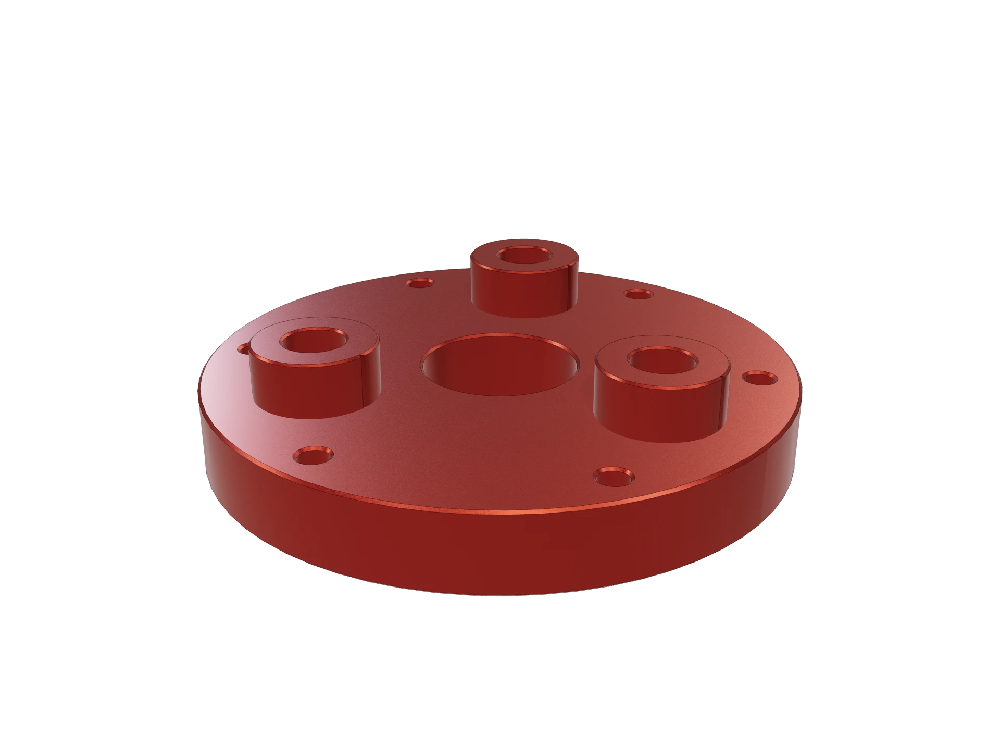
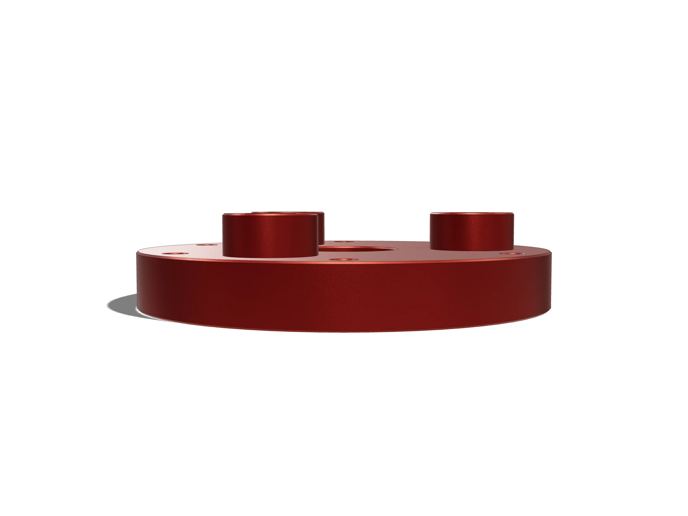
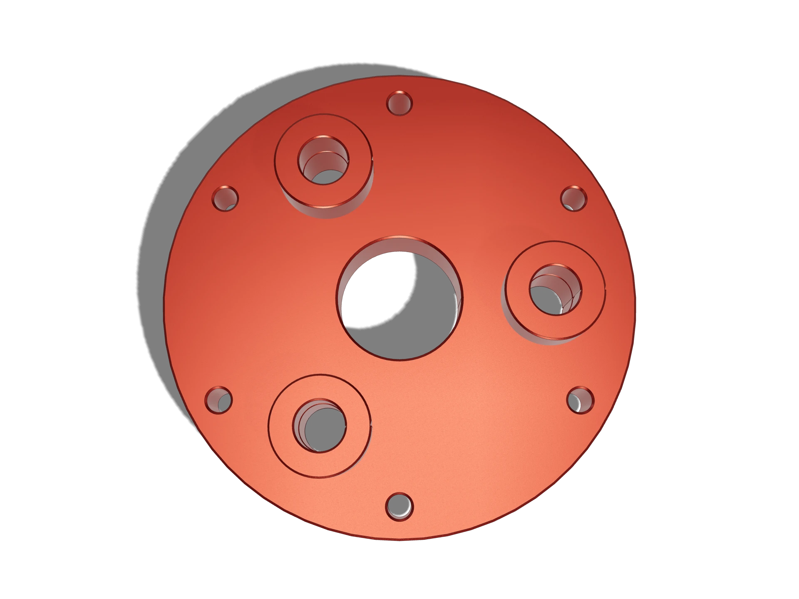

Planet carrier
A three-pin carrier for a 4:1 planetary reduction, with the pin bosses cut into the plate so there is no press fit to go loose.
PC-0318 · 7075-T6 · ⌀110 × 38 mm

Placeholder mesh. Christopher's export drops in here.
Finish
About this part
Pressed-in pins were the failure mode on the unit this replaces. After a few thousand reversals the interference relaxed and the pins started walking.
Machining the bosses from solid costs material and cycle time, and it deletes an interference fit, a press operation, and an inspection step. 7075 because the web between the pin bores and the bolt circle is thin.
The three pin positions are cut on the same circular interpolation as the centre bore, so pin-to-sun spacing is one machine’s repeatability instead of three tolerances added together.
| Material | 7075-T6 |
|---|---|
| Process | 3-axis mill, two setups |
| Envelope | ⌀110 × 38 mm |
| Mass | 604 g |
| Key tolerance | ±0.02 pin spacing |
| Mesh | 8 812 triangles · 430 KB |
| Finish | — |
| Roughness | — |
| Ratio | 4:1, three planets |
|---|---|
| Pin spacing | ⌀70 PCD, ±0.02 between any two |
| Torque | 180 Nm peak, reversing |
| Interface | ⌀30 H7 output bore, 6 × M6 on ⌀96 |
| Must not | rely on an interference fit |
| Rev | Change | Why |
|---|---|---|
| Rev A | First issue | Pressed pins on a ⌀70 circle |
| Rev B | Pins made integral | Deleted the press fit and the inspection it needed |
| Rev C | Material 6061 → 7075 | The web between bores was the limiting section |
| Rev D | Released | All pin bores called from one datum |
Plates
Rendered from the same model, in the finish this part ships in.

